Land acquisition and a five-bedroom build on four vacant lots in Bar X Ranch, unincorporated Brazoria County, Angleton, Texas 77515 — assessed for buildability, cost, flood and windstorm exposure, and what it is actually like to live there.
This document is a desktop screening study prepared from published regulation and public records. It is not a survey, an engineering opinion, a flood determination, insurance advice, legal advice or an appraisal. Read the disclaimer on the final page before relying on any figure in it.
Every material figure carries a confidence chip. They are not decoration — the chips are the point of the document, because the original portfolio presented estimates and errors in the same typeface as facts.
You asked which one lot to buy and build on, weighted for gardening, hobby farming, scenery, a good developed neighbourhood, quick access to amenities and safety from flood and storm. Two findings in this edition decide it, and neither was in any earlier version.
The recorded Bar X Ranch declaration of restrictions permits, on any lot, exactly three structures: one single-family dwelling, a garage, and one horse barn of no more than 30 × 25 ft (§3.01). And §3.15 provides that “no livestock of any kind other than house pets of reasonable kind and number may be kept on any Lot”, adding horses as the one express exception, on an acreage formula.
Chickens and ducks are neither house pets nor horses. On the face of the instrument, keeping them would need a written variance from the committee for the structure and a departure from the livestock clause. If poultry is non-negotiable for you, the honest answer is that Bar X Ranch is the wrong subdivision — buy unrestricted acreage in Brazoria County instead. Horses, unusually, are welcome: 1 per 32,670 sq ft, 2 per 42,000 sq ft.
| Rank | Lot | Garden soil | Room | Scenery | Flood headroom | Build risk | Price |
|---|---|---|---|---|---|---|---|
| 1 | 1127 Saddle Horn Bend 1.95 ac · PID 183667 |
Asa loam — well drained, prime | 1.95 ac | Mill Bayou, ~half the perimeter | 24–25 ft — needs 5–6 ft of fill | Low shrink-swell | $82,500 |
| 2 | 336 Wagon Wheel Trl W 1.00 ac · PID 183367 |
Asa loam — well drained, prime | 1.00 ac (0.87 by polygon) | Short frontage on a 12.6 ac pond | 28 ft — only ~2 ft of fill | Low shrink-swell | $45,000 |
| 3 | Lot 29 Broken Arrow Trl 1.30 ac · PID 186219 |
Pledger clay — 70% clay | 1.30 ac | Good frontage, 12.6 ac pond | 26 ft — 4 ft of fill | Vertisol — high movement | $49,000 |
| 4 | 750 Wagon Wheel Trl 1.00 ac · PID 183332 |
Pledger clay — 73% clay | 1.00 ac | Flag Lake, 101 acres | 24 ft — 6 ft of fill | Vertisol + abuts a dam | $58,000 |
On price alone Lot 29 wins outright — $37,692 an acre and the only lot asking below the county's appraisal. This edition would recommend it to an investor.
But it sits on Pledger clay: 70% clay, a permeability of 0.21 µm/s, hydrologic group D, and a linear extensibility of 19 — a shrink-swell vertisol. That is the ground that cracks slabs, forces an aerobic septic system, ponds after rain and gardens only in a two-week moisture window. The $10,000 you save on land you give back on the septic and the foundation, and you garden on it for the next thirty years. See §13.
If the budget is the binding constraint, Lot 2 is the value play within the good soil: the same Asa loam, the highest natural ground in the portfolio at 28 ft — so ~2 ft of fill instead of 5–6 — and it costs $37,500 less than Lot 1.
What you give up is room and outlook: 1.00 acre of record that the county's own polygon computes at 0.872, only 187 ft wide, and the shortest water frontage of the four. For a keen gardener that is the difference between a vegetable plot and an orchard.
Land is 9–16% of the all-in cost of putting a family into a house here. That is the single most important proportion in this document: the lot choice matters far less to the budget than the soil class, the pad and the distance to power — and all three of those are lot-specific unknowns that a $600 soil test and three phone calls would resolve.
Together those three lines were overstating the annual tax by roughly $260–$300 on the portfolio.
Neither earlier edition contained a single parcel identifier. Every lot is now tied to its Brazoria County Appraisal District record. This is the table that resolves the acreage disputes, the section numbers and the value question.
| Listing name | PID / geo ID | Legal description of record | Acres of record | GIS polygon | Bounding box (ft) | BCAD appraised | Deed |
|---|---|---|---|---|---|---|---|
| 1127 Saddle Horn Bend | 183667 1534-0084-000 | Bar X Ranch SEC 2 BLK 1 LOT 84 ACRES 1.95 | 1.95 | 2.000 | 316 × 460 | $65,030 | 2008-031507 |
| 336 Wagon Wheel Trail W | 183367 1533-0167-000 | Bar X Ranch LOT 167 ACRES 1. | 1.00 | 0.872 | 424 × 187 | $36,000 | V1523P212 |
| Lot 29 Broken Arrow Trail | 186219 1549-0029-000 | Bar X Ranch SEC 16 BLK 1 LOT 29 ACRES 1.3 | 1.30 | 1.166 | 370 × 354 | $51,870 | V268P248 |
| 750 Wagon Wheel Trail | 183332 1533-0132-000 | Bar X Ranch LOT 132 ACRES 1. | 1.00 | 0.955 | 479 × 123 | $50,000 | V1729P804 |
| Lot | Earlier editions said | County record says | Effect |
|---|---|---|---|
| 1127 Saddle Horn Bend | 1.95 ac | 1.95 ac — confirmed | None. The one acreage that was right. |
| 336 Wagon Wheel Trl W | 1.00 ac | 1.00 ac of record, but the county polygon computes to 0.872 ac | Buildable area may be ~13% less than the deed implies. Survey it. |
| Lot 29 Broken Arrow Trl | ~1.0 ac "est." | 1.30 ac | $/acre falls from ~$49,000 to $37,692. Best value in the portfolio. |
| 750 Wagon Wheel Trl | 1.0 ac or 1.27 ac — unresolved | 1.00 ac. The 1.27 figure is wrong. | Confirms it as the dearest land per acre, by 28% over Lot 29. |
Owner-of-record names are in the BCAD record and are deliberately not reproduced here. Search by PID at esearch.brazoriacad.org.
Pricing land per acre only works once the acreage is right, which is why neither earlier edition could do it. With the acreage of record established, two independent value tests are available: price per acre, and price against the appraisal the county already publishes for each parcel.
| Lot | Asking | Acres of record | $ per acre | BCAD appraised | Premium | Premium $ |
|---|---|---|---|---|---|---|
| 1127 Saddle Horn Bend | $82,500 | 1.95 ac | $42,308 | $65,030 | +26.9% | $17,470 |
| 336 Wagon Wheel Trail W | $45,000 | 1.00 ac | $45,000 | $36,000 | +25.0% | $9,000 |
| Lot 29 Broken Arrow Trail | $49,000 | 1.30 ac | $37,692 | $51,870 | -5.5% | $-2,870 |
| 750 Wagon Wheel Trail | $58,000 | 1.00 ac | $58,000 | $50,000 | +16.0% | $8,000 |
| Portfolio | $234,500 | 5.25 ac | $44,667 | $202,900 | +15.6% | $31,600 |
The second edition ranked 1127 Saddle Horn Bend cheapest per acre. Correcting Lot 29 from an estimated 1.0 acre to its recorded 1.30 acres moves it to the front by 11%.
An appraisal is not a market value, and Texas appraisals commonly lag a rising market. But a 27% premium on one lot and a discount on another, inside the same subdivision and the same flood zone, is a negotiating fact.
The map below is live Google Maps satellite imagery with all four parcels pinned in order. Use the buttons to switch between the four-lot route view, the whole subdivision, and each lot individually. Below it, the same four parcels are drawn as their actual county boundary polygons — which is what shows you where the water frontage really is.
| Lot | Listing name | Latitude | Longitude | PID | Open live |
|---|---|---|---|---|---|
| 1 | 1127 Saddle Horn Bend | 29.141219 | -95.559141 | 183667 | Google Maps · Street View |
| 2 | 336 Wagon Wheel Trail W | 29.140524 | -95.541472 | 183367 | Google Maps · Street View |
| 3 | Lot 29 Broken Arrow Trail | 29.144419 | -95.543456 | 186219 | Google Maps · Street View |
| 4 | 750 Wagon Wheel Trail | 29.130575 | -95.541987 | 183332 | Google Maps · Street View |
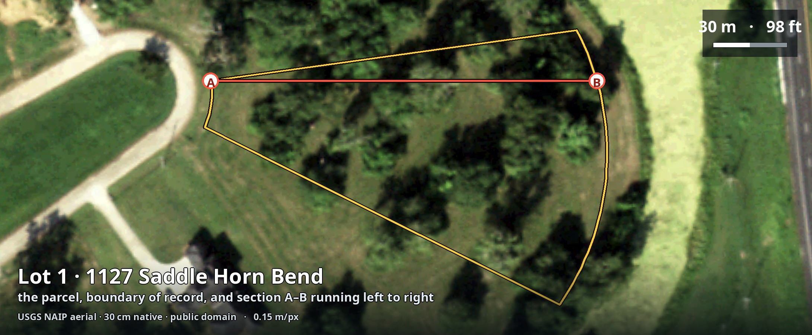
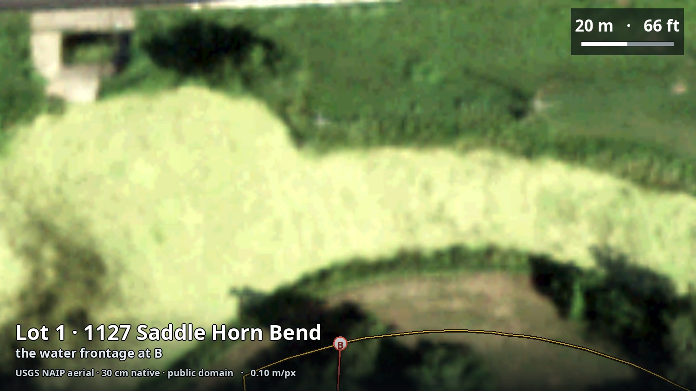
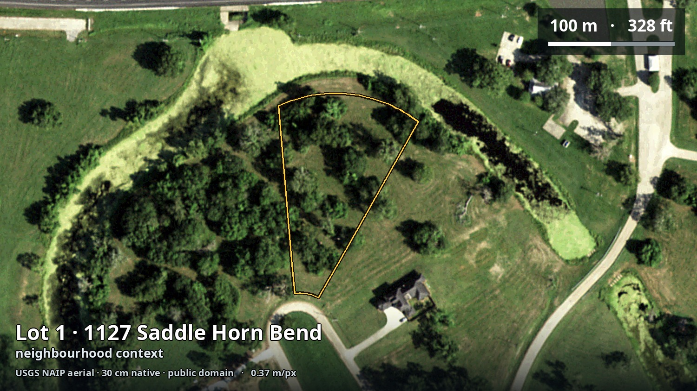
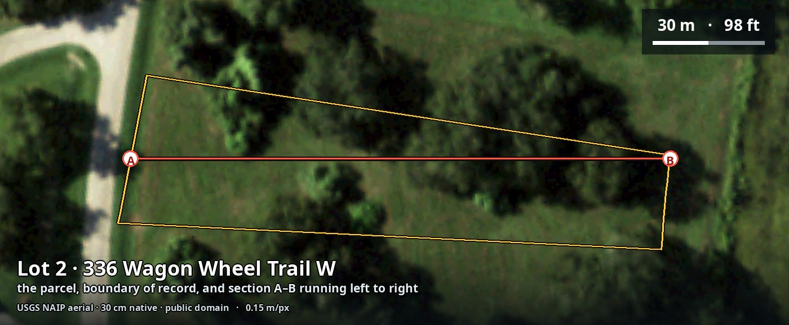
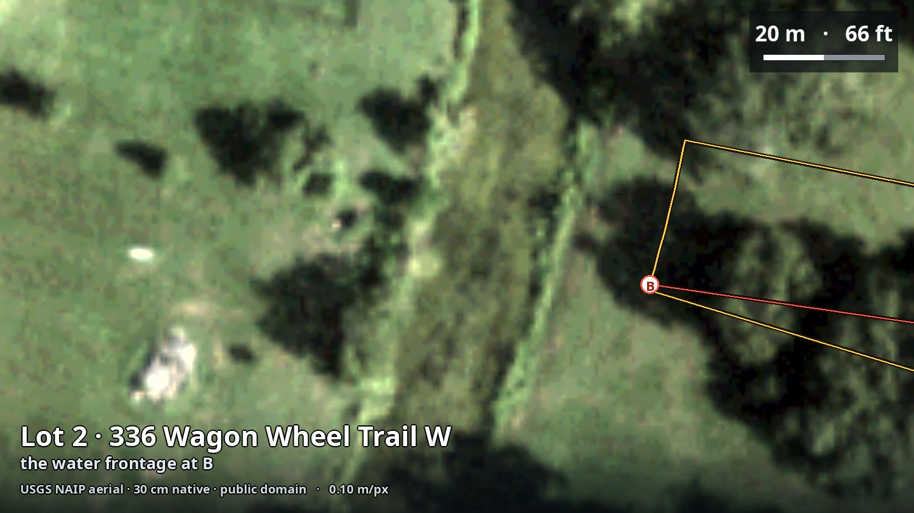
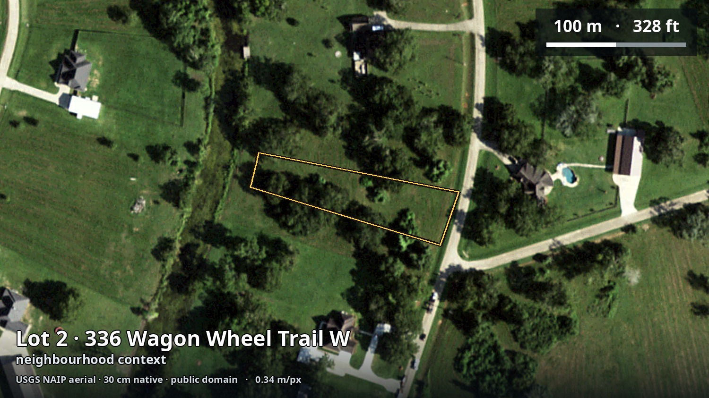
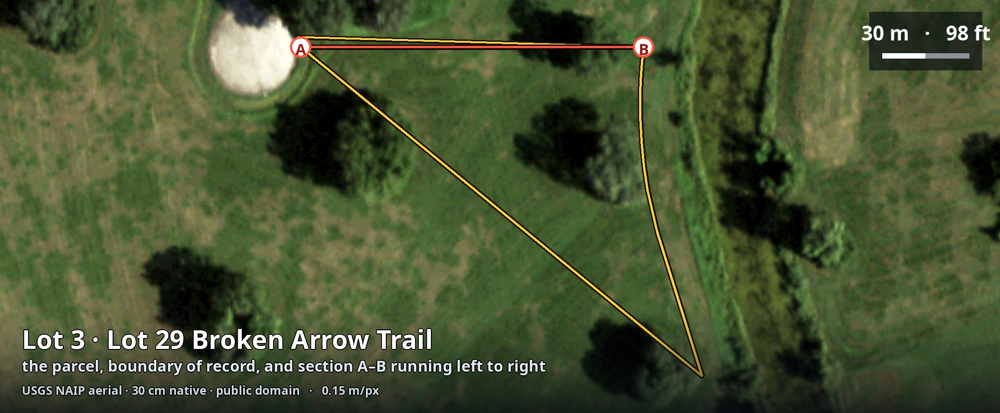
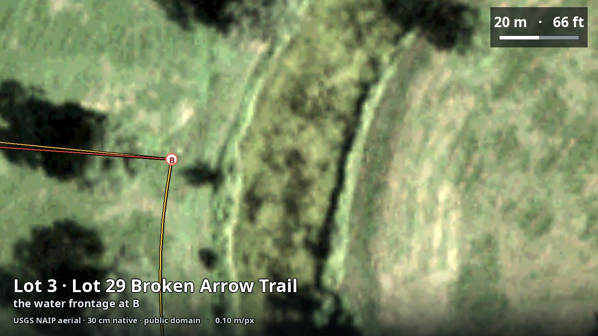
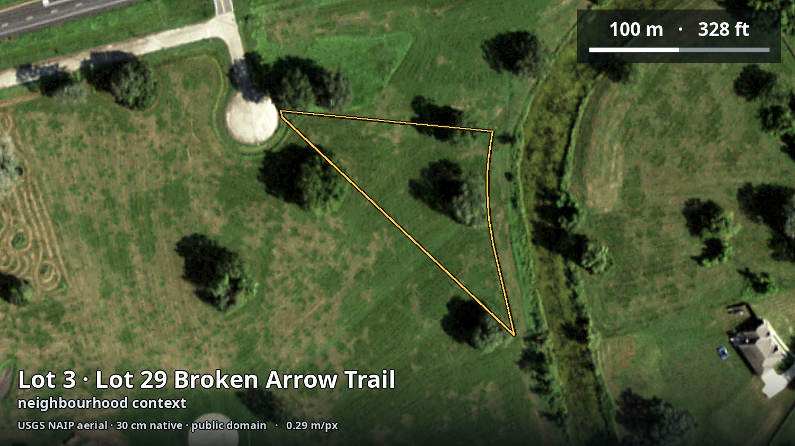
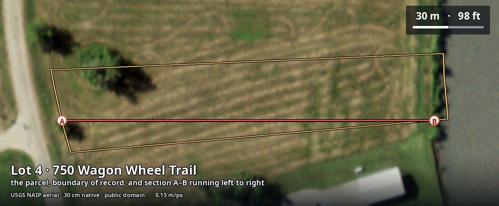
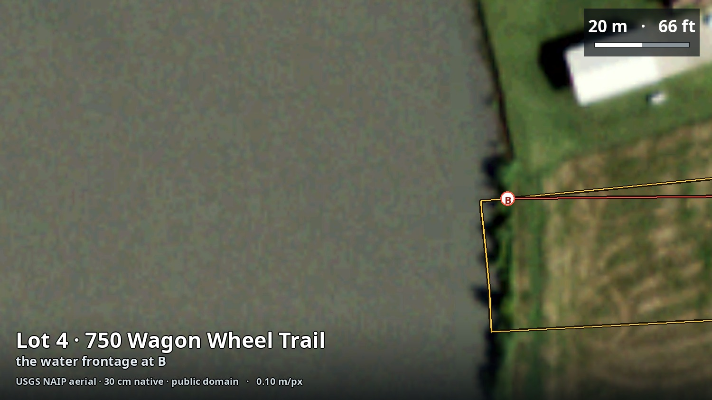
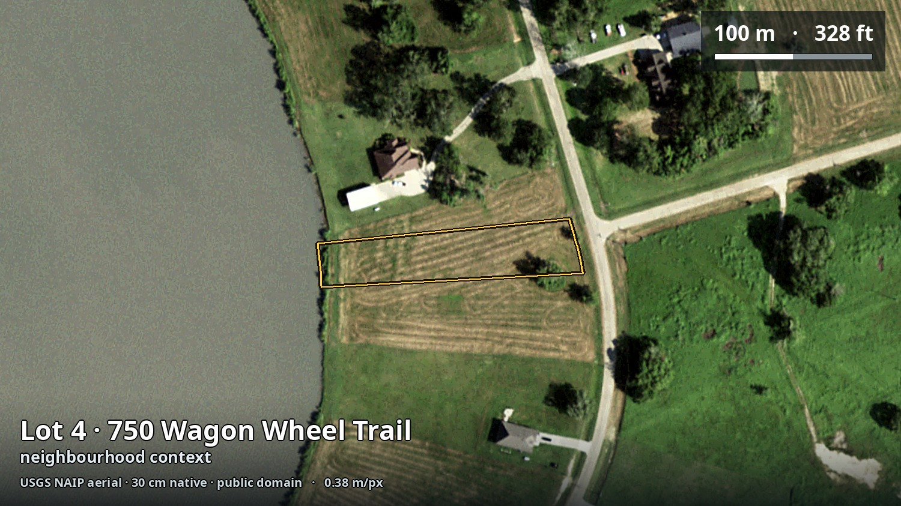
All four lots are in a mapped Special Flood Hazard Area. That was never in doubt. What both earlier editions got wrong is the elevation arithmetic, and it goes the wrong way.
Both earlier editions assumed a base flood elevation of 24 ft and concluded that natural ground of 28–30 ft cleared the county's requirement comfortably, so the house could be built at grade with no fill. Queried against the county's own copy of the effective FIRM:
| Lot | Nearest published BFE | Ground at parcel (LiDAR) | Required finished floor | Fill / stem wall needed | Consequence |
|---|---|---|---|---|---|
| 1127 Saddle Horn Bend | 28 ft | 24–25 ft | 30 ft | 5–6 ft | Largest lift of the four. Engineered pad or piers, not a slab on grade. |
| 336 Wagon Wheel Trl W | 28 ft | 28 ft | 30 ft | 2 ft | Smallest lift. The best ground in the portfolio. |
| Lot 29 Broken Arrow Trl | 28 ft | 26 ft | 30 ft | 4 ft | Middling. Budget a real pad. |
| 750 Wagon Wheel Trl | 28 ft | 24 ft | 30 ft | 6 ft | Largest lift, and it abuts a levee. See below. |
The second edition carried engineered pad and fill at $0–$8,000, treating it as optional. On these figures it is not optional on any lot, and a 4–6 ft lift under a 2,400–2,800 sq ft house is a different item altogether. §14 carries it at $12,000–$45,000.
It also all but forecloses the LOMA. A Letter of Map Amendment requires naturally high ground; placing fill converts the application into a LOMR-F, which carries a FEMA review fee and a far heavier evidential burden.
The parcel boundary runs 11 ft from the Flag Lake Levee embankment, which impounds the 101.5-acre Flag Pond. The structure is in the National Inventory of Dams as TX06298. Published NID data carries no hazard-potential classification and no condition assessment for it.
Lot 1 has a lighter version of the same question: it lies downstream of Bar X Development Dam (NID TX01759) on a Mill Bayou tributary, which NID does rate — low hazard potential. Ask TCEQ Dam Safety about both before buying either.
One correction carried forward: the county's 24-inch freeboard was adopted by Commissioners Court in May 2005, not raised after Hurricane Harvey in 2017. The original portfolio's causal story was twelve years out.
The next four pages give each lot a true-scale plan with the county's 1-foot LiDAR contours, and a longitudinal section cut along the dotted A–B line from the roadside boundary to the lakeside boundary.
Contours are Brazoria County's published LiDAR product at a 1-foot interval. The profile is sampled from the USGS 3DEP 1-metre digital elevation model at roughly 1 m spacing along the line, converted from metres to feet. The two are independent datasets and they agree to within about a foot across all four lots, which is the main reason to trust either.
| Lot | Section A–B | Ground on the buildable plateau | Highest | Lowest | Relief | Steepest bank | Fill to reach 30 ft |
|---|---|---|---|---|---|---|---|
| 1127 Saddle Horn Bend | 562 ft | 24–26 ft | 26.0 ft | 21.2 ft | 4.8 ft | 8.4° (15%) | 4–6 ft |
| 336 Wagon Wheel Trl W | 412 ft | 27–29 ft | 29.1 ft | 21.2 ft | 8.0 ft | 8.8° (16%) | ~2 ft |
| Lot 29 Broken Arrow Trl | 453 ft | 26–27 ft | 26.9 ft | 21.2 ft | 5.7 ft | 11.6° (20%) | 3–4 ft |
| 750 Wagon Wheel Trl | 568 ft | 23–24 ft | 30.7 ft (levee crest) | 23.1 ft | 7.6 ft | 8.5° (15%) | 6–7 ft |
Plan and section at a true horizontal scale of 1:2000. Contours are the county's 1 ft LiDAR product; the profile is USGS 3DEP 1 m DEM. Section A–B runs from the Saddle Horn Bend frontage (A) to the water boundary (B), a distance of 444 ft across the parcel.
Plan and section at a true horizontal scale of 1:1250. Contours are the county's 1 ft LiDAR product; the profile is USGS 3DEP 1 m DEM. Section A–B runs from the Wagon Wheel Trl frontage (A) to the water boundary (B), a distance of 412 ft across the parcel.
Plan and section at a true horizontal scale of 1:2000. Contours are the county's 1 ft LiDAR product; the profile is USGS 3DEP 1 m DEM. Section A–B runs from the Broken Arrow Trl frontage (A) to the water boundary (B), a distance of 335 ft across the parcel.
Plan and section at a true horizontal scale of 1:1250. Contours are the county's 1 ft LiDAR product; the profile is USGS 3DEP 1 m DEM. Section A–B runs from the Wagon Wheel Trl frontage (A) to the water boundary (B), a distance of 450 ft across the parcel.
Soil settles your garden, your septic system and your foundation at the same time, and the four lots do not share it. The USDA soil survey splits them cleanly down the middle.
| Property | Lots 1 & 2 — Asa silty clay loam | Lots 3 & 4 — Pledger clay | Why it matters to you |
|---|---|---|---|
| Taxonomy | Fluventic Hapludoll — an alluvial mollisol | Typic Hapludert — a vertisol | Mollisols are the world’s good farming soils. Vertisols are fertile but physically hostile. |
| Clay content, topsoil | 36.5% | 69.5% | Workability, drainage, everything. |
| Organic matter, topsoil | 3.1% | 6.5% | Both genuinely fertile; Pledger more so. |
| pH (1:1 water) | 6.8 — near neutral | 7.0 — neutral | Both excellent. Neither needs correcting for most vegetables. |
| Drainage class | Well drained | Moderately well drained | Wet feet kill more garden plants here than cold does. |
| Surface runoff | Negligible | High | High runoff on flat ground means standing water after rain. |
| Hydrologic group | B | D | D is the worst class — least infiltration, most runoff. A pluvial flood risk the FEMA map does not describe. |
| Saturated conductivity | 9.0 µm/s | 0.21 µm/s | Pledger is 43× less permeable. This is what drives the septic system type. |
| Linear extensibility (shrink-swell) | 4.5 — low to moderate | 19 — very high | Above about 9 is “high”. This is the number that cracks slabs, drives, and pipework. |
| Available water capacity | 0.18–0.20 | 0.14 | Asa holds more plant-available water despite being lighter. |
| Farmland classification | All areas prime farmland | All areas prime farmland | Both are officially prime. “Prime” is about fertility, not about being easy. |
| Flooding frequency | Rarely flooded | Rarely flooded | Same on both. |
For gardening: this is the good stuff. A silty clay loam at pH 6.8 with 3% organic matter, well drained, negligible runoff. It works over a wide moisture range, takes a spade in most weather, holds water without waterlogging, and needs no pH correction. You could plant directly into it.
For septic: at 9 µm/s it is likely TCEQ Class III, which means roughly 2,250 sq ft of absorptive area and a realistic chance of avoiding a full aerobic spray system. For foundations: a linear extensibility of 4.5 is ordinary engineering.
For gardening: hard work, permanently. Nearly 70% clay with slickensides in the subsoil. It is sticky and unworkable when wet, sets like fired brick when dry, and opens cracks you can put a hand into in August. Very fertile — but most people here end up gardening in raised beds with imported soil, which is a real annual cost and effort.
For septic: 0.21 µm/s is effectively impermeable — TCEQ Class IV, a conventional drainfield is not allowed, and an aerobic unit with a spray or drip field is mandatory: $15,000–$25,000 plus a maintenance contract for life. For foundations: extensibility 19 demands a post-tensioned or pier-and-beam design plus lifelong moisture management around the perimeter.
The recorded Bar X Ranch declaration of restrictions has now been read rather than paraphrased. Several figures repeated by the earlier editions are not in it, and several provisions that matter a great deal to your plans are.
| Provision | What the recorded instrument actually says | Effect on your plan |
|---|---|---|
| §3.15 Pets and livestock | No livestock of any kind other than house pets of reasonable kind and number. Horses are the single express exception: 1 per 32,670 sq ft, 2 per 42,000 sq ft, one more per additional 21,880 sq ft. | Chickens and ducks are not house pets and are not horses. Your hobby-farming plan is very likely barred. |
| §3.01 Structures permitted | One single-family dwelling, one attached or detached garage, and one horse barn no larger than 30 ft × 25 ft. Anything else needs written committee approval before construction. | No coop, no run, no shed, no greenhouse without a written variance. A greenhouse is as much of an issue as a coop. |
| §3.03 Dwelling size | Minimum 1,100 sq ft of living area, excluding open porches and garages; 1,400 sq ft if more than two storeys. | The “1,800 sq ft minimum” quoted by earlier editions is not in this instrument. Your 2,400–2,800 sq ft house clears it easily either way. |
| §3.06 Minimum lot area | No building on a lot under 21,880 sq ft; no resubdivision without written committee approval. | All four lots clear this. Lot 2 at 0.872 ac by the county polygon is still 38,000 sq ft. |
| §3.05 Orientation | The front of the lot is the property line with the shortest dimension abutting a street; the dwelling must face it; a detached garage may sit no nearer the front line than the house. | Fixes your house orientation. On the long, narrow lots this constrains where the septic field and garden can go. |
| §3.12 Fences | Any lot with a horse barn must be fenced. All fences and their locations need written approval. No home-made fences. | A garden fence — against deer, rabbits and your own dogs — is a committee submission. |
| §3.04 Roofing | Wood shingle, built-up tar and gravel, or asphalt shingle of not less than 340 lb per square. | Rules out standing-seam metal without a variance; metal is otherwise the sensible coastal choice. |
| §3.07 Nuisance | No noxious or offensive activity, nor anything that may become an annoyance to the neighbourhood. Exterior display or discharge of firearms expressly forbidden. | A cockerel is the textbook “annoyance” complaint even where hens are tolerated. |
| §3.13 Lot maintenance | Owners must keep grass and weeds cut and fences painted; the association may enter, do the work, and bill the owner. | This is the origin of the $125 vacant-lot mowing charge in the carrying-cost model. |
| §3.14 / §3.16 Septic and drainage | No septic tank may drain into road ditches. Drainage of streets, lots or roadway ditches may not be impaired. | Directly relevant to the 2–6 ft pad that §10 shows you need: you may not solve your flood problem by pushing water onto the road or a neighbour. |
| §4.05 Committee | The architectural control committee's powers ceased 15 years after the instrument and passed to the property owners' association. | Submissions go to the POA today, not to a developer committee. |
Every house here is on a private well and an on-site sewage facility. This is where the original portfolio was most wrong, and where §16's soil finding now produces two different answers.
| Basis | Flow Q (gpd) | Septic tank required |
|---|---|---|
| 5 bedrooms, dwelling under 4,500 sq ft, no water-saving devices | 450 | Both flows fall in the 351–500 gpd band → 1,250 gal minimum verified |
| Same, with water-saving devices | 360 |
| TCEQ soil class | Loading rate Ra | Absorptive area at Q = 450 | Which lots | System that results |
|---|---|---|---|---|
| Class III — clay loam | 0.20 gal/sf/day | ~2,250 sq ft | Lots 1 & 2 — Asa, 9 µm/s | Conventional drainfield may be permissible; low-pressure dosed or aerobic if not. $8,000–$15,000 |
| Class IV — clay | 0.10 gal/sf/day | ~4,500 sq ft | Lots 3 & 4 — Pledger, 0.21 µm/s | Conventional drainfield not permitted. Aerobic treatment unit (600 gal min) plus spray or drip field, and a mandatory maintenance contract. $15,000–$25,000 |
| Class Ib–II — sandy/loamy | 0.25–0.38 | ~1,184–1,800 sq ft | Neither, on the survey | Conventional. Cheapest outcome, not available here. |
| From | To | Minimum separation |
|---|---|---|
| Private well or cistern | Soil absorption or spray field | 100 ft |
| Private well or cistern | Septic tank | 50 ft |
| Lake or pond, at normal pool | Soil absorption / unlined evapotranspiration bed | 75 ft |
| Lake or pond, at normal pool | Surface (spray) application | 50 ft |
| Property line | Spray field | 10 ft (and no spray across a line) |
The second edition carried fill at $0–$8,000 and treated it as optional. §10 and §11 show it is mandatory on every lot, at 2–6 ft. That single line, plus the vertisol foundation upcharge on Lots 3 and 4, is most of the change here.
| Item | Low | High | Note |
|---|---|---|---|
| County development / building permit ($75 + $0.04/sf, flood zone) | $165 | $200 | One combined permit verified |
| Fill & grading permit | $0 | $80 | |
| Contractor IRC registration | $0 | $0 | Required before the permit issues |
| OSSF site and soil evaluation | $350 | $600 | Buy this first |
| OSSF permit to construct | $300 | $500 | |
| OSSF system installed | $8,000 | $25,000 | Class III on Lots 1–2, Class IV aerobic on Lots 3–4 |
| Water well, pump and pressure tank | $10,000 | $20,000 | |
| Water treatment for coastal groundwater | $0 | $8,000 | Test before you assume $0 |
| Boundary and topographic survey | $1,500 | $3,500 | |
| Elevation certificate | $500 | $900 | |
| LOMR-F preparation | $500 | $1,200 | Fill forecloses the fee-free LOMA route |
| Driveway culvert and county road access | $1,500 | $5,000 | |
| Electric service extension | $0 | $25,000 | Get this quoted per lot |
| Propane tank and set | $1,000 | $3,000 | No natural gas here |
| Clearing and grubbing | $1,500 | $6,000 | |
| Engineered pad / imported fill, 2–6 ft | $12,000 | $45,000 | Was $0–$8,000. Lot 2 at the low end, Lots 1 and 4 at the high end. |
| Vertisol foundation upcharge | $0 | $20,000 | Lots 3 and 4 only — post-tensioned or piered for LEP 19 |
| POA architectural review, transfer and resale certificate | $500 | $750 | |
| Pre-construction subtotal | ~$38,000 | ~$165,000 | v1: $11–17k → v2: $26–108k |
Central planning case $60,000–$95,000. The three variables that decide where you land are, in order: soil class, depth of fill, and distance to power. All three are lot-specific, and all three can be resolved for under $1,000 and three phone calls.
| Component | Low | High |
|---|---|---|
| Land, one lot | $45,000 | $82,500 |
| Pre-construction, above | $38,000 | $165,000 |
| House, 2,400–2,800 sq ft at $175–$250/sq ft estimate | $420,000 | $700,000 |
| All-in, one lot built | ~$505,000 | ~$950,000 |
The second edition's tax model included an Angleton-Danbury hospital district levy and an Angleton drainage district levy. Checked parcel by parcel against the county's taxing-district layers, these lots are in neither — nor in any junior-college district or MUD.
| Taxing entity | Rate per $100 (TY2025) | Applies to these lots? |
|---|---|---|
| Brazoria County | 0.304758 | Yes verified |
| Columbia-Brazoria ISD | 0.953000 | Yes — all four lots verified |
| Emergency Services District 1 and 2 | up to 0.100000 each | Yes — rate not confirmed; statutory cap used estimate |
| Angleton-Danbury Hospital District | 0.074685 | No — no hospital district reaches these parcels corrected |
| Angleton Drainage District | 0.052816 | No — county-wide drainage only corrected |
| Brazosport / Alvin Junior College District | — | No — neither district reaches these parcels new |
| Effective combined rate | 1.2578% – 1.4578% |
| Item | Basis | All four lots | One lot (1127 Saddle Horn Bend) |
|---|---|---|---|
| Property tax, on the current appraised value | 1.26–1.46% of $202,900 / $65,030 | $2,552–$2,958 | $818–$948 |
| Property tax, once reappraised to what you pay | 1.26–1.46% of $234,500 / $82,500 | $2,950–$3,418 | $1,038–$1,203 |
| POA dues | $400 per lot per year unverified | $1,600 | $400 |
| Vacant-lot mowing charge | $125 per lot per year unverified | $500 | $125 |
| Total annual carry while vacant | $4,650–$5,520 | $1,350–$1,730 |
$4,650–$5,520 a year is 2.0–2.4% of the $234,500 land basis, every year, on land that produces nothing. Over three years, $14,000–$16,500. Add the 15.6% premium over appraised value and the four-lot investment case needs Bar X Ranch land to appreciate roughly 4–5% a year just to break even.
$1,350–$1,730 a year, and it stops being dead money the day you build. Once the house is standing you also become eligible for the Texas homestead exemption, which the vacant-land case cannot claim — a material saving the earlier editions never mentioned.
POA dues and the mowing charge come from listing copy for other Bar X Ranch lots, not from the association. Confirm both, and the transfer fee, on a POA resale certificate. §17 shows the mowing charge is grounded in §3.13 of the recorded restrictions.
You asked about safety from storms. On the coast this is two separate questions — what the building code makes you build, and what the insurance costs — and the answers are better than you might fear for an address 28 miles from the Gulf.
| Requirement | What it means here |
|---|---|
| Design wind speed | 120 mph 3-second gust, TDI Inland I new in v3 |
| Certificate of compliance | A WPI-8 is required, and the application must be made before construction begins. Brazoria is a designated catastrophe area. verified |
| Who signs it | A TDI-appointed engineer for new construction in a first-tier county |
| Why you want it anyway | Without a WPI-8 the property is not insurable through TWIA, which is the residual market most coastal Texas homes depend on |
| Storm surge | Not the governing threat at this distance inland — the nearest Gulf shoreline is 28 mi by road. Wind and rainfall are. |
| Rainfall | The wettest year in the 1991–2020 record delivered 2,024 mm against a 1,177 mm average. This, not surge, is what floods Bar X Ranch. |
| Coverage | Note | Estimated annual |
|---|---|---|
| Flood — NFIP or private | Risk Rating 2.0 prices on first-floor height and distance to water, so waterfront costs more and the 30 ft pad helps. NFIP building cover caps at $250,000; excess flood needed above that. | $1,500–$4,000 |
| Windstorm — TWIA | State average residential premium $2,541 as at 30 June 2026; the 2027 filing directs no rate increase, with a ~3% automatic dwelling-coverage uplift on renewals from 1 Sept 2026. verified | $2,500–$4,000 |
| Homeowners, excluding wind and flood | Fire, liability, contents | $1,000–$1,500 |
| Total once built estimate | $5,000–$9,500 |
A humid subtropical Gulf coast climate: long, hot, wet summers, short mild winters, almost no frost, and a 320-day growing season that is the single best thing about gardening here.
| Month | Mean daily max °C | Mean daily min °C | Mean °C | Rainfall mm | °F max / min |
|---|---|---|---|---|---|
| Jan | 17.3 | 9.3 | 13.3 | 96 | 63 / 49 |
| Feb | 19.1 | 11.0 | 15.1 | 79 | 66 / 52 |
| Mar | 22.0 | 14.1 | 18.1 | 90 | 72 / 57 |
| Apr | 25.2 | 17.4 | 21.3 | 96 | 77 / 63 |
| May | 28.7 | 21.5 | 25.1 | 89 | 84 / 71 |
| Jun | 31.2 | 24.4 | 27.8 | 107 | 88 / 76 |
| Jul | 32.1 | 25.2 | 28.6 | 90 | 90 / 77 |
| Aug | 32.5 | 25.2 | 28.9 | 98 | 90 / 77 |
| Sep | 30.2 | 23.1 | 26.6 | 121 | 86 / 74 |
| Oct | 26.7 | 18.9 | 22.8 | 109 | 80 / 66 |
| Nov | 21.8 | 14.0 | 17.9 | 103 | 71 / 57 |
| Dec | 18.3 | 10.5 | 14.4 | 99 | 65 / 51 |
| Year | 25.4 | 17.9 | 21.7 | 1,177 | 78 / 64 |
| Mean last spring frost | 2 February |
| Mean first autumn frost | 19 December |
| Frost-free growing season | ~320 days |
| Earliest / latest last spring frost | 5 Jan / 5 Mar |
| USDA hardiness zone | 9a–9b |
| Annual mean temperature | 21.7 °C |
You asked specifically about flood, storm and fire. FEMA's National Risk Index scores every US county on eighteen hazards. This is Brazoria County, December 2025 edition.
| Hazard | County risk rating | Annualised frequency | County expected annual loss |
|---|---|---|---|
| Riverine flooding | Relatively High | 1.86 events/yr | $78.2 m |
| Hurricane | Relatively High | 0.22 events/yr | $43.6 m |
| Tornado | Relatively High | 1.11 events/yr | $20.9 m |
| Lightning | Relatively High | 70.0 events/yr | $2.3 m |
| Ice storm | Relatively High | — | — |
| Coastal flooding | Relatively Moderate | 3.74 events/yr | $2.0 m |
| Strong wind | Relatively Moderate | 1.03 events/yr | $0.8 m |
| Heat wave | Relatively Moderate | 14.9 events/yr | $5.0 m |
| Cold wave | Relatively Moderate | — | — |
| Drought | Relatively Moderate | 28.5 months/yr affected | $1.4 m |
| Hail | Relatively Low | 1.59 events/yr | $0.4 m |
| Wildfire | Relatively Low | 0.004 events/yr | $0.9 m |
| Winter weather | Very Low | — | — |
| Earthquake | Very Low | — | — |
| Landslide | Very Low | — | — |
Relatively Low, at an annualised frequency of 0.004. This is coastal prairie and cropland on heavy, moist clay, criss-crossed by bayous, with no forest canopy and no slope. Wildfire is close to a non-issue here, and it is one of the few hazards where this location is genuinely better than most of Texas. Grass fires in a drought year are the realistic version of the risk, not a crown fire.
Relatively High for riverine flooding, at 1.86 events a year and $78 m of expected annual loss county-wide — the largest single hazard loss in the county. All four lots are in mapped Zone AE. Coastal flooding, by contrast, is only Relatively Moderate at this distance inland. Rain, not surge, is the threat.
Bar X Ranch is rural but not remote. The honest summary: nothing is far, and nothing is close. Almost every daily errand is a 12–20 minute drive, there is no walkable anything, and a second car is not optional.
| Daily essentials | Miles | Drive min | Note |
|---|---|---|---|
| H-E-B supermarket, West Columbia | 6.7 | 13 | nearest full supermarket |
| Valero fuel + convenience, Hwy 35 | 4.2 | 9 | nearest fuel |
| Walgreens pharmacy, West Columbia | 6.6 | 13 | nearest pharmacy |
| Brazoria Community Library | 2.9 | 11 | nearest public building of any kind |
| H-E-B supermarket, Angleton | 9.9 | 18 | |
| Kroger, Angleton | 10.1 | 18 | |
| Walmart Supercenter, Angleton | 10.2 | 19 | |
| Buc-ee's, Hwy 288 | 7.4 | 14 | regional travel stop |
| Angleton town centre / county courthouse | 9.0 | 16 | county seat |
| Walmart Supercenter, Lake Jackson | 15.8 | 26 |
| Health care | Miles | Drive min | Note |
|---|---|---|---|
| UTMB Health Urgent Care | 7.3 | 14 | nearest urgent care |
| AngletonER (freestanding emergency) | 9.9 | 18 | 24 h emergency |
| UTMB Health Angleton-Danbury Campus | 11.3 | 20 | nearest full hospital + ER |
| Sweeny Community Hospital | 14.7 | 27 | |
| St Luke's Health Brazosport, Lake Jackson | 16.9 | 27 | larger acute hospital |
| Memorial Hermann Sugar Land | 44.7 | 66 | |
| Texas Medical Center, Houston | 47.8 | 63 | tertiary / specialist care |
| Schools — Columbia-Brazoria ISD | Miles | Drive min | Note |
|---|---|---|---|
| West Columbia Elementary | 7.0 | 14 | |
| Columbia High School | 7.1 | 14 | |
| Wild Peach Elementary | 12.3 | 23 | |
| West Brazos Junior High | 13.8 | 24 | |
| Brazosport College, Lake Jackson | 16.5 | 27 | nearest college (approx.) |
| Shopping, dining, going out | Miles | Drive min | Note |
|---|---|---|---|
| Margarita Jones / Republic BBQ, West Columbia | 6.5 | 12 | nearest sit-down restaurants |
| Elroy Floyd's / Damifino | 8.8 | 16 | nearest bars |
| Cooter Browns Country Club, Brazoria | 8.9 | 23 | nearest live-music venue |
| AMC Classic Brazos 14 cinema | 15.6 | 26 | nearest cinema |
| Brazos Mall, Lake Jackson | 15.6 | 26 | nearest enclosed mall |
| Wayside Pub, Lake Jackson | 16.4 | 26 | |
| Pearland Town Center | 36.3 | 49 | first large-format retail |
| The Strand / downtown Galveston | 60.0 | 92 | nightlife district (approx.) |
| Downtown Houston | 50.6 | 67 | full metropolitan nightlife |
All four lots are in Columbia-Brazoria ISD, confirmed parcel by parcel against the county's school-district layer — not Angleton ISD, despite the Angleton postal address. The campuses are in Brazoria and West Columbia, 7–14 miles west and south. Confirm the actual attendance zone for your lot directly with CBISD before you buy: district boundaries and campus assignments are different things, and this document deliberately does not reproduce school performance ratings, because the only dataset available to it is a decade out of date.
Locally it is a handful of bars 16 minutes away and one country music venue in Brazoria at 23 minutes. A cinema and an enclosed mall are 26 minutes, in Lake Jackson. Anything you would recognise as a night out — restaurants with a wine list, live music with a choice of venue, theatre, clubs — is Houston at 67 minutes or Galveston at 90. That is a designated-driver drive, not a taxi ride. If frequent nightlife matters, this is the weakest column in the whole assessment.
| Coast, resorts and amusements | Miles | Drive min | Note |
|---|---|---|---|
| The Wilderness Golf Course | 17.0 | 28 | nearest golf |
| Sea Center Texas, Lake Jackson | 18.4 | 29 | aquarium + hatchery, free |
| San Bernard National Wildlife Refuge | 19.1 | 41 | |
| Surfside Beach | 28.3 | 42 | nearest Gulf beach |
| Brazos Bend State Park | 31.0 | 51 | |
| Space Center Houston | 44.9 | 72 | |
| Kemah Boardwalk | 51.0 | 81 | |
| Moody Gardens, Galveston | 59.4 | 92 | |
| San Luis Resort, Galveston | 59.0 | 91 | nearest full resort hotel |
| Galveston Pleasure Pier / Schlitterbahn waterpark | 60.2 | 91 | Schlitterbahn is seasonal |
| Galveston Island seawall | 61.2 | 93 |
This is the column where the location genuinely delivers, and it is why people move here. Bar X Ranch is 3,200 acres of large wooded lots, century live oaks, two lakes and bayou frontage in the Bastrop Bayou watershed. Bar X listings describe deer, hogs, raccoons, squirrels, bald eagles and a wide range of birds; the Central Flyway runs directly overhead, which makes spring and autumn migration exceptional from your own garden.
The lot choice decides how much of this you get. Lot 4 fronts a 101-acre lake. Lot 1 fronts Mill Bayou along roughly half its perimeter, with mature trees. Lot 3 has good frontage on a 12.6-acre pond. Lot 2 has the least — a short frontage on the same pond.
You asked for a good, developed neighbourhood. On the census evidence this is a markedly affluent, stable, almost entirely owner-occupied rural neighbourhood — and one with essentially no Indian community in it.
| Measure | Census Tract 6625 (contains all four lots) | Brazoria County | Texas |
|---|---|---|---|
| Population | 3,452 | 391,255 | 30,188,424 |
| Median age | 42.3 | 36.7 | 35.6 |
| Median household income | $116,550 | $97,993 | $78,476 |
| Median owner-occupied home value | $384,100 | $301,600 | $283,800 |
| Owner-occupied share of homes | 96.9% | 74.1% | 62.6% |
| White alone | 76.4% | 47.7% | 48.5% |
| Black or African American alone | 6.2% | 16.2% | 12.2% |
| Asian alone | 0.2% | 7.4% | 5.6% |
| Two or more races | 16.7% | 21.1% | 23.5% |
| Hispanic or Latino (any race) | 29.6% | 31.6% | 39.7% |
| Asian Indian (alone or in combination) | none reported | 6,414 (1.6%) | 588,500 (1.9%) |
Median household income of $116,550 is 19% above the county and 49% above Texas. 96.9% of homes are owner-occupied — against 74% county-wide — which is an unusually low-churn, invested neighbourhood. Median home value is $384,100, comfortably above the county's $301,600, and the median age of 42.3 points to established families rather than a transient population. Bar X Ranch has been developed since 1980, has concrete streets, and is governed by a working POA that maintains frontages and amenities.
The tract records 7 Asian residents out of 3,452 — 0.2% — and no Asian Indian population at all in the ACS estimate. Brazoria County as a whole has 6,414 people of Asian Indian origin, 1.6% of the county, but they are concentrated 30–40 miles north around Pearland, not here. If cultural community, temple attendance, Indian grocery shopping and a peer group for children matter to you day to day, this address does not supply them locally — it supplies them at 55 to 75 minutes each way.
| Indian community | Miles | Drive min | Note |
|---|---|---|---|
| The Monk's Indian Bistro | 35.5 | 48 | nearest Indian restaurant |
| Sri Meenakshi Temple, Pearland | 39.5 | 58 | largest South Indian temple in the region |
| Gayatri Bhavan (South Indian) | 40.5 | 58 | |
| HMM Vitthal Rukmini Mandir, Rosenberg | 42.0 | 58 | |
| Desi Brothers Farmers Market, Sugar Land | 42.9 | 62 | nearest South Asian grocery |
| BAPS Shri Swaminarayan Mandir, Stafford | 45.1 | 67 | |
| Mahatma Gandhi District (Hillcroft), Houston | 54.7 | 73 | main Indian commercial district |
| Airports | Miles | Drive min | Note |
|---|---|---|---|
| Texas Gulf Coast Regional (LBX) | 11.8 | 29 | general aviation only — no scheduled service |
| Houston Hobby (HOU) | 49.5 | 71 | nearest international airport |
| Houston Bush Intercontinental (IAH) | 70.4 | 95 | long-haul hub |
The POA amenity base is the main thing your $400 a year buys, and it is better than the original portfolio described.
POA office: 1169 Bar X Trail, Angleton TX 77515 · barxranch.org
Eighteen tests, weighted to what you said matters: gardening, hobby farming, quick access to amenities, a good and developed neighbourhood, scenery and nature, and safety from flood and storm. Green is good, amber is a compromise, red is a problem.
| Test | Lot 1 1127 Saddle Horn |
Lot 2 336 Wagon Wheel W |
Lot 3 29 Broken Arrow |
Lot 4 750 Wagon Wheel |
|---|---|---|---|---|
| Garden soil Asa loam vs Pledger clay — §16 | Excellent | Excellent | Poor | Poor |
| Room to garden acres of record | 1.95 ac | 1.00 ac | 1.30 ac | 1.00 ac |
| Hobby farming — poultry restrictions bar livestock on all four — §17 | Barred | Barred | Barred | Barred |
| Hobby farming — horses §3.15 formula on lot area | 3 horses | 2 horses | 2 horses | 2 horses |
| Flood headroom natural ground vs the 30 ft floor — §11 | 4–6 ft fill | ~2 ft fill | 3–4 ft fill | 6–7 ft fill |
| Rain ponding on the lot hydrologic group | Group B | Group B | Group D | Group D |
| Storm exposure all four TDI Inland I, 120 mph | Equal | Equal | Equal | Dam adjacent |
| Wildfire county Relatively Low throughout | Negligible | Negligible | Negligible | Negligible |
| Foundation risk linear extensibility | LEP 4.5 | LEP 4.5 | LEP 19 | LEP 19 |
| Septic cost TCEQ class implied by permeability | $8–15k | $8–15k | $15–25k | $15–25k |
| Septic layout fits? field + 100% reserve + well + setbacks | Comfortable | Tight — 187 ft wide | Workable | Tightest — 123 ft wide |
| Scenic beauty water body and frontage | Mill Bayou, ½ perimeter | Short pond frontage | Good pond frontage | 101-acre lake |
| Quiet distance to State Highway 35 | 0.09 mi — noisiest | 0.37 mi | 0.10 mi — noisy | 1.03 mi — quietest |
| Access to amenities all four within 1.5 mi of each other | Equal | Equal | Equal | +2–3 min |
| Neighbourhood same tract, same POA, same ISD | Equal | Equal | Equal | Equal |
| Jurisdiction county only, or also a city ETJ | County only | Baileys Prairie ETJ | County only | County only |
| Price asking | $82,500 | $45,000 | $49,000 | $58,000 |
| Value against county appraisal premium or discount | +26.9% | +25.0% | −5.5% | +16.0% |
| Green / amber / red | 9 / 3 / 3 | 8 / 5 / 3 | 3 / 5 / 7 | 3 / 3 / 9 |
It carries the most greens and, more importantly, the right ones. It is the only lot that combines good garden soil with room to use it and real scenery — and soil and space are the two things you cannot buy later. Its weaknesses are all things money or design can fix: a 4–6 ft pad, and highway noise that a treed 1.95-acre lot and a house set back from the frontage will substantially absorb.
Open at $65,000 — the county's appraised value — and be willing to go to about $72,000. At $82,500 you are paying a 26.9% premium to the county's own number on a lot that also needs the second-deepest pad in the portfolio. If the seller will not move below roughly $75,000, take Lot 2 at $45,000 instead: the same excellent soil and three feet more flood headroom, and accept the smaller garden. Do not buy Lots 3 or 4 — the Pledger clay costs you more in septic and foundation than you save on land, and Lot 4's dam is an unquantified risk.
The original generated portfolio, the v2 rebuild, and this edition. Only the items where the answer actually moved are listed.
| # | Original portfolio said | v2 corrected it to | v3 establishes |
|---|---|---|---|
| 1 | No parcel identifiers at all | Same — none available | PID, geo ID, legal description, deed reference for all four |
| 2 | Lot 29 ~1.0 ac "est." | Unresolved | 1.30 ac of record — $/acre falls to $37,692 |
| 3 | 750 Wagon Wheel 1.0 or 1.27 ac | Unresolved | 1.00 ac of record; the 1.27 figure is wrong |
| 4 | Lot 29 is interior | Repeated as interior | Waterfront — 7 of 13 boundary vertices within 60 ft of a 12.6 ac pond |
| 5 | Panel 48039C0605K | Repeated as verified | Panel 48039C0420K, eff. 30 Dec 2020 |
| 6 | BFE ~24 ft; build at grade | Flagged the range, kept 24 ft as plausible | Nearest published BFE line is 28 ft NAVD88 at every lot |
| 7 | Natural ground 28–30 ft | Repeated, flagged unverified | 24–28 ft from county LiDAR — so 2–6 ft of fill is mandatory |
| 8 | Fill "minimal" | $0–$8,000, optional | $12,000–$45,000, and not optional |
| 9 | Soil class unknown | Unknown; assumed Class III–IV | Asa loam on Lots 1–2, Pledger vertisol on Lots 3–4 — a 43× permeability difference |
| 10 | No foundation risk noted | Not noted | LEP 19 on Lots 3–4 — post-tensioned or piered design |
| 11 | Minimum dwelling 1,800 sq ft | Repeated, flagged unverified | 1,100 sq ft in the recorded instrument |
| 12 | "ACC Rev 2" governs all four | Flagged as doubtful | Three different recorded instruments — 1515/679, 1532/471, 84-29/885 |
| 13 | Silent on animals | Silent | Livestock barred except horses; one horse barn only — poultry very likely prohibited |
| 14 | No tax at all | County + CBISD + hospital + drainage districts | County + CBISD + ESD only — no hospital, drainage or college district |
| 15 | Carry not modelled | $5,050–$5,750/yr on four lots | $4,650–$5,520/yr, and $1,350–$1,730 on one |
| 16 | Windstorm omitted | TWIA average $2,541; WPI-8 required | TDI Inland I, 120 mph — the zone boundary follows SH 35 |
| 17 | Jurisdiction unstated | Unincorporated county | Lot 2 is inside the Baileys Prairie ETJ; the other three are not |
| 18 | Surfside 20 min | ~30 min | 42 min by road |
| 19 | 10 catfish/day as state law | Shown to be impossible as state law | Confirmed a POA house rule at most |
| 20 | No dam or levee noted | Not noted | Lot 4 abuts Flag Lake Levee (NID TX06298), unrated; Lot 1 downstream of TX01759 |
| 21 | Cheapest waterfront framing | Ranked 1127 Saddle Horn cheapest per acre | All four are waterfront; Lot 29 is cheapest per acre |
| 22 | Total 9 pages, no drawings | 12 sections, no drawings | True-scale plans and terrain sections for all four lots |
The full claim-by-claim audit of the original document remains in docs/AUDIT.md. The evidence trail for everything new in this edition, including the exact service queries, is in docs/EVIDENCE.md.
Nine of these cost almost nothing and between them they resolve every remaining material unknown. Do them before you make an offer, not after.
| Source | Used for |
|---|---|
| Brazoria County public ArcGIS — general/Parcels, general/Floodplain, general/LiDAR, general/Taxing_Entities, general/Legal_and_Development, general/Roads, general/Community_Features | Parcel record, FEMA zone and FIRM panel per parcel, published BFE lines, 1 ft elevation contours, taxing districts, recorded plats and restriction references, street centrelines, school locations |
| USGS 3DEP 1 m digital elevation model | The A–B terrain profiles in §12–15 |
| USDA NRCS SSURGO, Brazoria County soil survey | Soil series, texture, permeability, shrink-swell, drainage class, hydrologic group (§16) |
| Bar X Ranch declaration of restrictions as recorded (Deed Vol. 1679, Pg. 695) | Permitted structures, livestock, dwelling size, fences, setbacks, lot maintenance (§17) |
| 30 TAC §285.91 (TCEQ OSSF) | Wastewater flow, tank sizing, loading rates, separation distances (§18) |
| Brazoria County building permit fee schedule, permit application, floodplain administration | Permit cost, the 24-inch freeboard standard, contact route |
| FEMA — National Risk Index (Dec 2025), LOMA/LOMR-F guidance, FIS 48039CV001A | Hazard ratings (§23), map-amendment routes, study effective date |
| Texas Department of Insurance — windstorm zone map and community list for Brazoria County | Inland I 120 mph determination, WPI-8 obligation (§21) |
| TWIA — published rates and liability report | Windstorm premium (§21) |
| TPWD — private-water fishing exemption, freshwater bag and length limits | Correcting the fishing claims (§28) |
| US Census Bureau — ACS 2024 five-year estimates, tract 6625 | Demographics, income, tenure, Indian population (§27) |
| ERA5 reanalysis, daily 1991–2020 at the parcels | Climate normals in Celsius, frost dates, growing season (§22) |
| OpenStreetMap and OSRM; National Inventory of Dams | Water-body geometry and frontage measurement, road distances and drive times, dam records |
Source content has been paraphrased and summarised rather than quoted at length, except for short quotations from the recorded deed restrictions in §17, where the exact wording is the point. The full register, including everything that could not be verified, is in docs/SOURCES.md; the machine-retrieved evidence and the exact queries are in docs/EVIDENCE.md.
Site-specific BFE in writing for any lot · the TCEQ soil class from a site evaluation · distance to three-phase power at each lot · the recorded restriction instrument for each specific section · POA dues, mowing and transfer fees from a resale certificate · ESD 1 and 2 tax rates · Angleton Levee accreditation status · Flag Lake Levee hazard class and condition · Brazoria County CRS class · whether the POA permits poultry in practice · broadband availability at the addresses · current school attendance zones and campus performance.